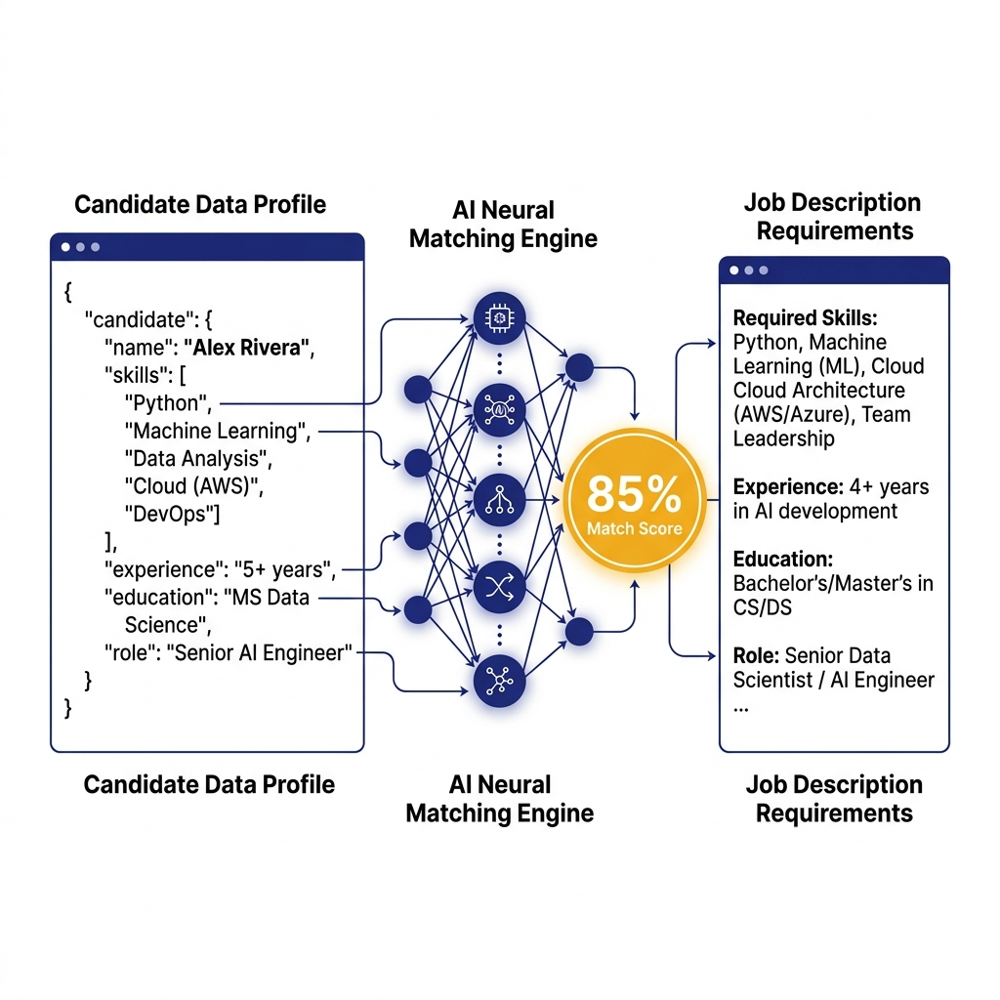

Báo Cáo Kỹ Thuật Module · YODY ATS
Phân Tích Kỹ Thuật 2 AI Skill ATS
Phân tích chi tiết quy trình xử lý, schema chuẩn hóa, validation script và cơ chế so khớp ngữ nghĩa của cv-to-candidate-record & candidate-jd-matcher.
Skill 1: cv-to-candidate-record
Bối Cảnh, Kích Hoạt & Quy Trình Bóc Tách CV 10 Bước
Mục Tiêu & Nguyên Tắc Xử Lý
Tự Động Hóa Nhập Liệu Hồ Sơ
Chuyển đổi các định dạng CV thô thành dữ liệu JSON chuẩn mực (candidate-record.json) sẵn sàng lưu trữ vào YODY ATS.
- Kích hoạt: Nhận file PDF, DOCX, TXT, MD, Hình ảnh hoặc Text dán trực tiếp.
- Chính xác: Giữ nguyên ý nghĩa thông tin gốc trong CV.
- Minh bạch: Ghi rõ dữ liệu thiếu vào
missingFieldsvà dữ liệu nghi ngờ vàouncertainFields.
candidate-schema.mdnormalization-rules.mdcandidate-record.jsonTài Nguyên Tham Chiếu Skill 1
Cấu Trúc Schema JSON & 9 Nhóm Quy Tắc Chuẩn Hóa
Schema & Template JSON
Tham chiếu candidate-schema.md & template.json
candidate: Họ tên, Email, SĐT, Location, Title, Summary, Skills, Languages, Links.workExperience: Công ty, Chức danh, Start/EndDate, Mô tả, Thành tích, Skills.projects&education: Tên dự án/trường, Vai trò/Bằng cấp, Công nghệ/Ngành.certifications: Tên chứng chỉ, Tổ chức cấp, Ngày cấp, Credential URL.missingFields&uncertainFields: Ghi nhận trường thiếu / nghi ngờ.
9 Quy Tắc Chuẩn Hóa Dữ Liệu
Tham chiếu normalization-rules.md
+.
YYYY-MM, YYYY, present.
ReactJS → React).
others.
totalExperienceMonths (không trùng).
missingFields & uncertainFields.
Kiểm Soát Chất Lượng Kỹ Thuật
Cơ Chế Validation Tự Động Với Python Script
Vai Trò Script Gác Cổng (Quality Gate)
Script validate_candidate_record.py đóng vai trò cổng kiểm soát tự động tại Bước 8-9 của Skill 1, bắt buộc vòng lặp sửa lỗi cho tới khi đạt exit code 0.
python scripts/validate_candidate_record.py candidate-record.json
Kiểm Tra Regex & Định Dạng
Xác thực chuẩn định dạng Email, Ngày tháng (YYYY-MM, YYYY, present) và URL (bắt đầu bằng http:// hoặc https://).
Cấu Trúc Top-Level Required Keys
Yêu cầu đầy đủ 7 root keys: candidate, workExperience, projects, education, certifications, missingFields, uncertainFields.
Logic Kiểu Dữ Liệu & Unique Constraint
Đảm bảo totalExperienceMonths là số nguyên không âm hoặc null, phát hiện và chặn danh sách skills bị trùng lặp.
Skill 2: candidate-jd-matcher
Ngữ Cảnh & Cơ Chế So Khớp Ngữ Nghĩa (Semantic Matching)
Phân Tích Thông Minh Linh Hoạt
Đóng vai hệ thống AI phân tích & sàng lọc ứng viên của YODY ATS, nhận 2 luồng dữ liệu vào để so sánh độ phù hợp.
- Luồng 1 (candidateRecord): Dữ liệu ứng viên bóc tách dạng JSON.
- Luồng 2 (jobDescription): Yêu cầu công việc dạng Text.
- Semantic Matching: JD yêu cầu "Frontend Framework" và ứng viên có "React" → Điểm cộng mạnh. Không chấm từ khóa máy móc.

Chuẩn Đầu Ra Kết Quả
Cấu Trúc Output JSON & 3 Mức Khuyến Nghị Tuyển Dụng
Quy Định Output JSON Duy Nhất
Bắt buộc trả về duy nhất chuỗi JSON hợp lệ (không chứa markdown code block hay văn bản giải thích thừa).
score(Number): Điểm số đánh giá tổng thể từ 0 đến 100.recommendation(String): Chỉ chọn 1 trong 3 trạng thái tuyển dụng.reason(String): Viết 1-2 câu tóm tắt nguyên nhân chính (nêu điểm mạnh nổi bật & lỗ hổng lớn nhất nếu có).
3 Trạng Thái Recommendation
Khớp kỹ năng cốt lõi & số năm kinh nghiệm.
Khớp phần lớn yêu cầu, thiếu kỹ năng phụ.
Thiếu kỹ năng bắt buộc / kinh nghiệm không đủ.